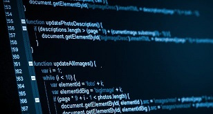

programming languages main page:
links
introduction
.

programming:It is the writing of a set of commands, or what is known as the code, and these commands are what constitute what is known as the program,
it is what guides and determines its behavior. A computer or electronic device translates and executes these commands.
programming languages:In the programming process, special languages known as programming languages are used,
and these languages carry vocabulary in addition to specific rules to guide the computer system to carry out specific tasks.
Each programming language contains a set of special words, in addition to a specific way of writing (Syntax), that specifies how to organize program commands.